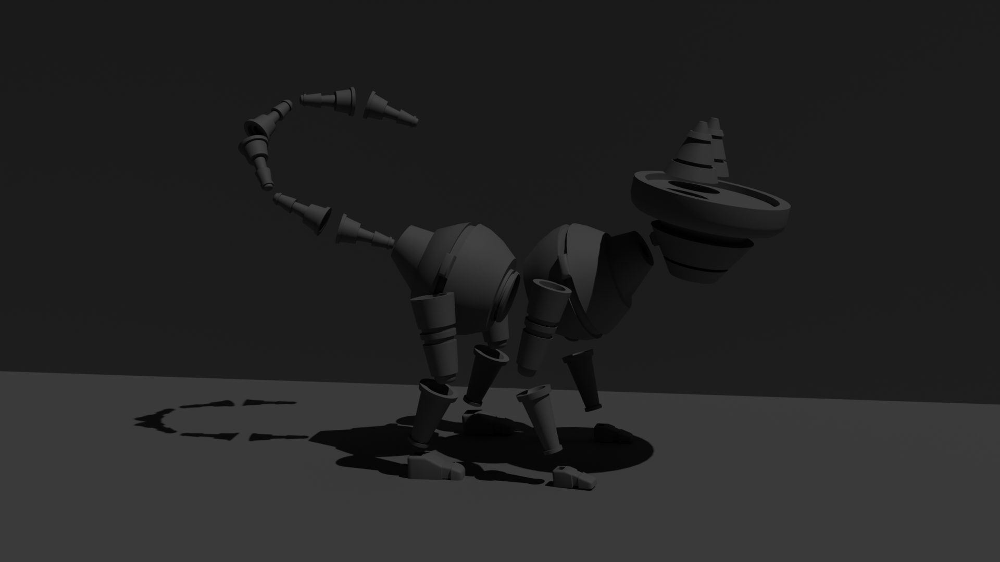
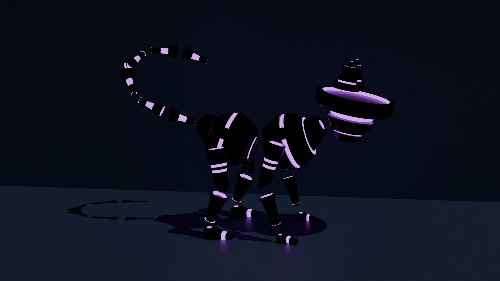

Sin textura · arana-sin-textura.jpg

Con textura
Con textura
Sin textura
MODE 03 · ARTE 3D
Modelado, rig y animación con foco en estilo flat 2D en entorno 3D — el mismo efecto que se usa en películas como Your Name. Cada proyecto incluye comparador de texturas, visor 3D interactivo y animaciones.
MODELADO · EN PROGRESO
Robot araña de estética steampunk: cuerpo en cúpula oscura, brazos de cobre, patas azules y una antena luminosa. El ojo cambiará de color según la emoción del personaje.
Emociones por asignar · animaciones próximamente.
MODELADO · RIG · ANIMACIÓN
Gato robótico de cuerpo negro con bandas violeta luminosas, cola segmentada y sombrero. Modelado, rigged y animado en Blender con tres ciclos de movimiento.

